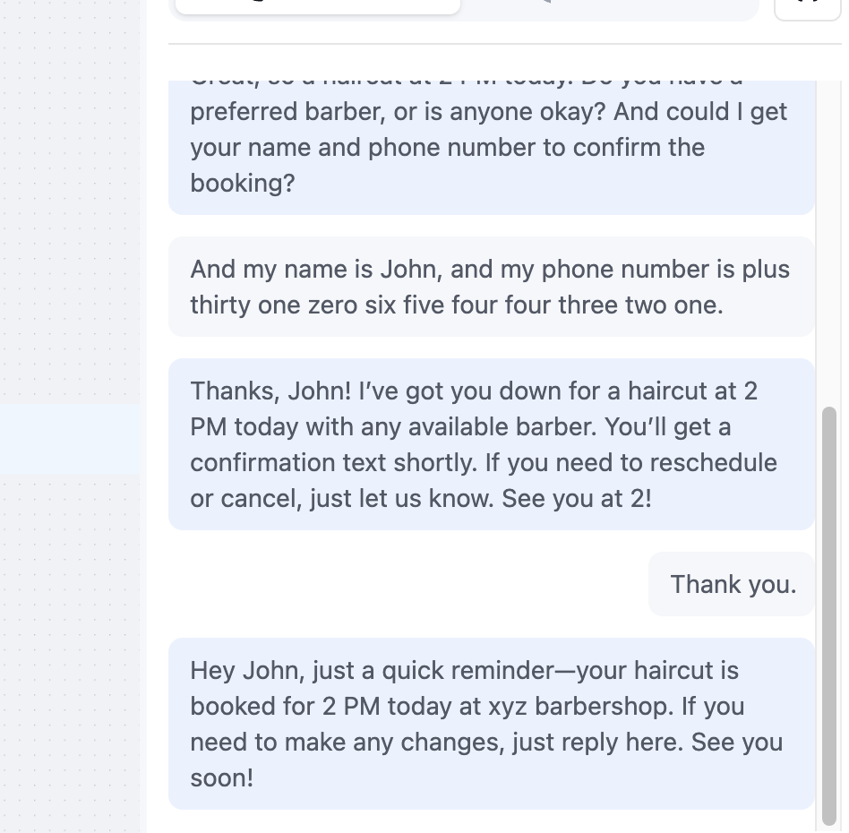

Over het project
De AI Barber Booking Agent is een slimme chatbot die automatisch kappersafspraken plant via spraak of tekst. De AI begrijpt natuurlijke taal, stelt gerichte vragen (zoals tijd, datum en behandeling) en bevestigt vervolgens de afspraak. Dit project toont mijn vermogen om AI-systemen te bouwen en integreren met bestaande workflows.
Wat heb ik gedaan?
- Een prompt geschreven voor ChatGPT om een AI-agent te genereren voor barbershop-afspraken.
- De gegenereerde code en logica gekopieerd en geïmplementeerd in Retell AI.
- Een nieuw project aangemaakt in Retell AI en de prompt ingevoegd.
- Speech Normalization toegevoegd om gesprekskwaliteit te verbeteren.
- De NodeWelcome bewerkt om de begroeting natuurlijker te maken.
- De volledige conversatie getest, inclusief spraakinteractie.
Stappenplan
In ChatGPT schreef ik een prompt om een AI-agent te creëren die kappersafspraken kan boeken. De prompt bevat logica voor afspraken, tijden, behandelingen en bevestigingen.
ChatGPT genereerde de basiscode en een systeem-prompt, die ik vervolgens heb gekopieerd voor gebruik in Retell AI.

In Retell AI maakte ik een nieuw project aan en plakte ik de gegenereerde prompt in de hoofdconfiguratie.

Vervolgens voegde ik Speech Normalization toe om spraakconsistentie en verstaanbaarheid te verbeteren.

Ik bewerkte de NodeWelcome om de introductie persoonlijker en natuurlijker te maken. Hierdoor begroet de AI de klant op een vriendelijke manier.

Daarna testte ik de volledige conversatie. De AI vroeg om naam, gewenste behandeling, datum en tijd, controleerde de beschikbaarheid en bevestigde de afspraak automatisch.